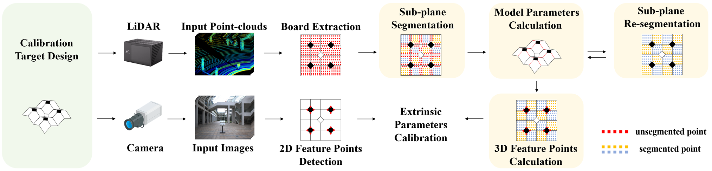
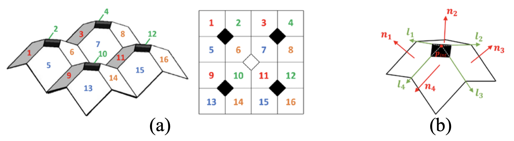
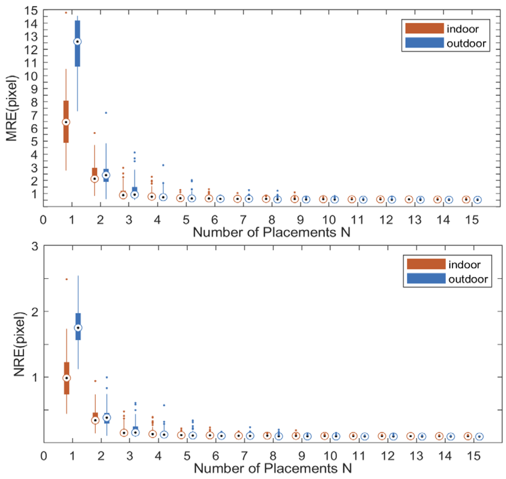

Multi-Dimensional Geometric Feature-Based Calibration Method for LiDAR and Camera Fusion
Yuhan Hao
Xin Jin
Dongyu Du
ICASSP 2024

Extrinsic calibration between LiDAR and camera has become an indispensable task across diverse domains, including autonomous vehicles, robotics, and surveillance systems. However, existing methods suffer from limited precision due to the inaccurate and insufficient detected features caused by the sparsity of point-clouds and the inherent ranging errors of LiDAR. In this paper, we propose a multi-dimensional geometric feature-based calibration method between LiDAR and camera. First, a 3D structured calibration target is proposed with multi-normal surfaces, edges in different directions, and distinctive corner features. Secondly, a pointplane and angle error-based point-cloud feature detection method is designed to establish 3D-2D feature point pairs with image features. Finally, a Perspective-n-Point (PnP) problem is solved to estimate the extrinsic parameters. The experimental results show that the proposed method reduces Mean Reprojection Error (MRE) by 0.05 pixels and achieves a 70% reduction in Normalized Reprojection Error (NRE) compared with state-of-the-art (SOTA) methods under the conditions of smaller training size, larger test size, and more repeat times.
Designed Calibration Target

(a) The calibration target and sub-plane indexes. (b) The details of the calibration target. The red arrows indicate four normal vectors, the green arrows indicate four intersection line directions of each set, and the red dot indicates the intersection point of the four planes.
Results

MRE and NRE under a different number of placements.